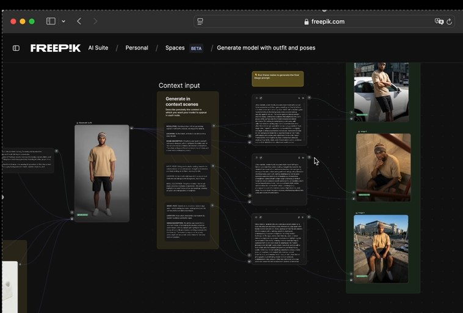
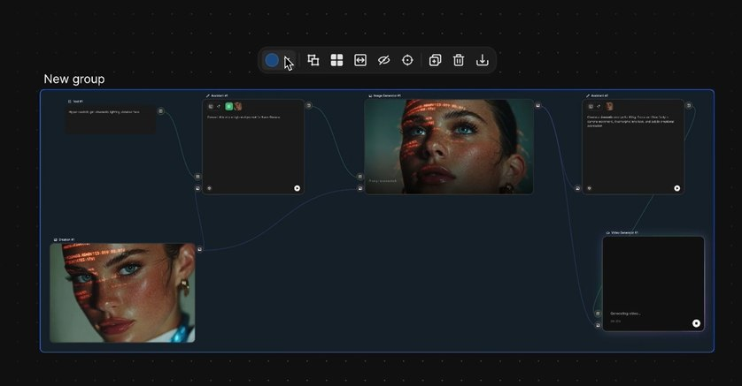

Pipeline de personagem no Freepik Spaces — nodes: Model input (LoRA), Outfit input, Context input conectados ao Image Generator para consistência total

Vista alternativa do pipeline de personagem

Pipeline completo com resultados gerados
👤 Custom Characters (LoRA)
LoRA (Low-Rank Adaptation) é a tecnologia por trás dos Custom Characters do Freepik. É um método de fine-tuning que ensina o modelo de IA a reconhecer e recriar um personagem específico a partir de fotos reais.
🧠 Como o LoRA Funciona
Em vez de treinar o modelo completo (o que seria impossível em hardware comum), o LoRA treina apenas um conjunto pequeno de parâmetros que "guiam" o modelo principal para reproduzir características específicas.
- •O resultado é um arquivo de poucos MB que funciona como "instruções adicionais" para o modelo
- •O modelo continua gerando qualquer cena, mas agora com o personagem treinado
- •LoRAs são reutilizáveis: treine uma vez, use em todos os projetos
- •Múltiplos LoRAs podem ser combinados (personagem + estilo)
💡 Por que LoRA é Essencial para Filmes
Sem LoRA, um personagem gerado por IA muda de aparência entre cenas mesmo com o mesmo prompt — nariz diferente, estrutura do rosto alterada, olhos de cor diferente. Com LoRA treinado, o personagem é reconhecível em 100% das cenas, em qualquer ângulo, qualquer roupa, qualquer cenário.
📤 Upload de Referências
A qualidade do LoRA depende inteiramente das fotos de referência. Fotos ruins ou repetitivas treinam um modelo fraco. Fotos variadas e de alta qualidade treinam um modelo preciso.
✓ Fotos Ideais
- ✓20-24 fotos variadas (mínimo 12)
- ✓Ângulos variados: frontal, 3/4, perfil esquerdo, perfil direito
- ✓Expressões variadas: neutro, sorrindo, sério, surpreso
- ✓Iluminações diferentes: natural, artificial, sombra
- ✓Resolução mínima: 512x512px, ideal 1024px+
- ✓Fundo neutro preferível em 50% das fotos
✗ Fotos a Evitar
- ✗Todas do mesmo ângulo e expressão
- ✗Fotos com óculos de sol ou que ocultam o rosto
- ✗Filtros pesados que distorcem traços faciais
- ✗Fotos muito escuras ou com rosto desfocado
- ✗Menos de 12 fotos (qualidade do LoRA muito baixa)
- ✗Selfies em ângulo extremo (de cima ou de baixo)
⏳ Processo de Treinamento
Após o upload das fotos, o Freepik processa o treinamento em servidores GPU por 10-30 minutos. O processo é completamente automático.
Upload das fotos
Acesse All Tools → Custom Characters → Criar novo personagem. Faça upload das 12-24 fotos e dê um nome ao personagem.
Processamento automático (10-30 min)
O Freepik processa as imagens, remove fundos, detecta rostos e treina o LoRA nos servidores. Você recebe notificação quando concluir.
LoRA disponível na conta
O personagem aparece em "Meus Personagens". Pode ser selecionado como Character Reference em qualquer geração ou como node no Spaces.
📅 Planejamento de Produção
Treine os LoRAs dos personagens principais pelo menos 1 dia antes do início da produção. O treinamento deve estar disponível antes de qualquer geração de cena.
🔗 Usando o Personagem nas Cenas
Com o LoRA treinado, o personagem pode ser usado em qualquer geração via Character Reference — no Image Generator standalone ou como node no Spaces para pipelines automatizados.

Personagem gerado com LoRA — consistência mantida

Workflow de personagem — múltiplas cenas em paralelo
⚙️ Configuração no Spaces
No Spaces, o pipeline de personagem tem três inputs conectados ao Image Generator:
- •Model Input — o LoRA do personagem (sua "impressão digital")
- •Outfit Input — referência de roupa/look para a cena específica
- •Context Input — prompt textual da cena (cenário, ação, iluminação)
Peso recomendado do LoRA: 0.6-0.9 (0.9 para máxima fidelidade ao personagem, 0.6 para mais criatividade na cena)
✏️ Pikaso / Sketch-to-Image
Pikaso é a ferramenta de desenho em tempo real do Freepik: você desenha traços simples em um canvas e o modelo gera uma imagem fotorrealista ou estilizada instantaneamente, atualizando a cada pincelada.
✏️ Como Usar o Pikaso
- 1.Acesse All Tools → Pikaso no Freepik
- 2.Escolha o modelo de geração (fotorrealista, anime, ilustração)
- 3.Desenhe no canvas — traços simples são suficientes
- 4.A imagem se atualiza em tempo real a cada traço
- 5.Adicione um prompt de texto para refinar o resultado
- 6.Exporte a melhor versão para o Image Generator para refinamento
Casos de Uso em Filmes
- • Esboçar a composição de uma cena rapidamente
- • Testar ângulos de câmera antes de gerar
- • Criar storyboard visual em minutos
- • Definir layout de personagem em cena
- • Explorar looks de personagem visualmente
Vantagens vs Prompt Puro
- • Mais intuitivo para quem pensa visualmente
- • Controle direto da posição dos elementos
- • Feedback imediato sem gerar créditos
- • Ideal para diretores que fazem storyboard
- • Resultado exportável como referência
🔄 Variations para Personagens
Com o LoRA fixo, você pode gerar variações infinitas do personagem em diferentes roupas, expressões, ambientes e situações, mantendo sempre a identidade visual.
🔄 Estratégia de Variations
Explorar Looks
Antes de produzir: gere 6-8 variações de look (roupas, cabelo, acessórios) para definir o visual definitivo do personagem no filme.
Expressões Emocionais
Para arcos dramáticos: gere o personagem em cada emoção-chave (alegre, triste, com medo, determinado) para ter referências visuais do arco.
Figurino por Cena
Para cada cena: mude apenas o Outfit Input mantendo o LoRA e o Context — o personagem aparece com a roupa certa para aquela situação.
✅ Resumo do Módulo 2.4
Próximo Módulo:
2.5 — Upscalers e Qualidade: Magnific até 10K e Topaz até 4K 60fps